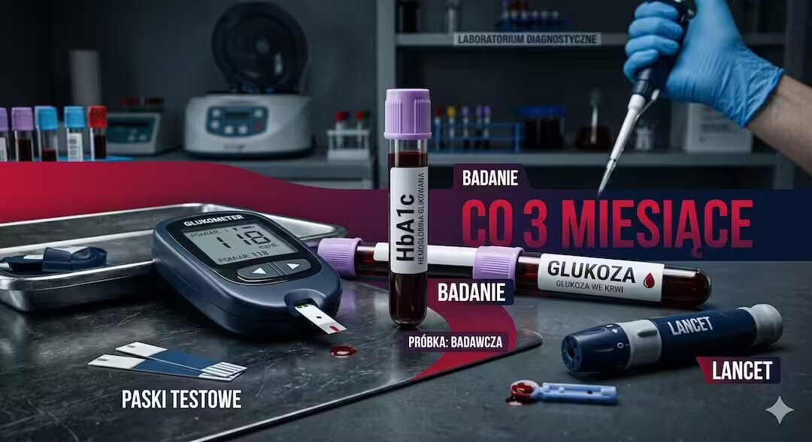
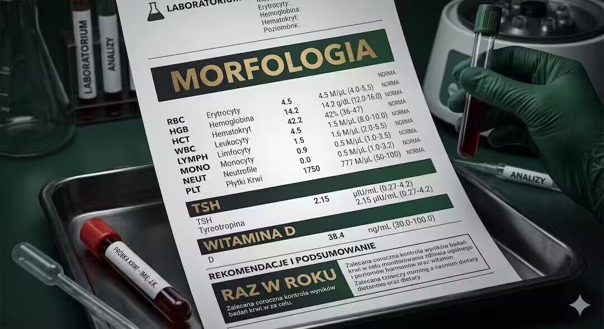
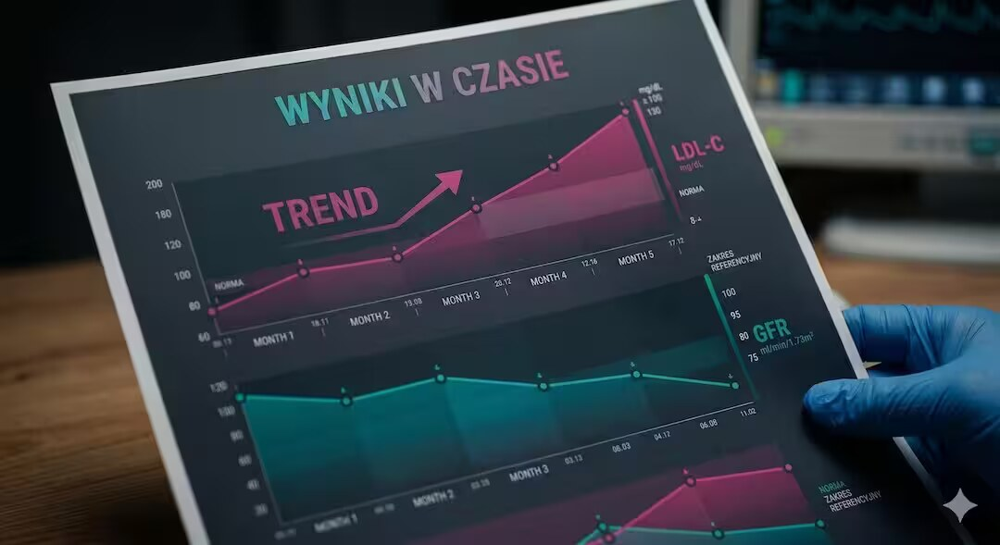

Po pięćdziesiątce regularne badania krwi to nie fanaberia – to podstawa zarządzania własnym zdrowiem. Poziom cukru, lipidy, hormony tarczycy czy morfologia mogą zdradzić poważne problemy zanim pojawią się objawy. Sprawdź, które wyniki warto kontrolować co kwartał, a które wystarczy monitorować raz w roku.
Szybka odpowiedź
Podstawowy panel (morfologia, glukoza, lipidy, próby wątrobowe) wykonuj raz w roku, a markery stanu zapalnego (hs-CRP) raz na 6 miesięcy, jeśli jesteś aktywny fizycznie. Kluczem jest monitorowanie trendów, a nie pojedynczego wyniku, by wcześnie wykryć oporność anaboliczną lub metaboliczną. Zawsze badaj krew rano, na czczo i po 2 dniach bez ciężkiego treningu.
Szybka odpowiedź
Po 50. roku życia co 3 miesiące warto kontrolować glukozę na czczo, HbA1c (przy cukrzycy lub prediabetes) oraz lipidogram przy leczeniu statynami. Raz w roku wystarczają: morfologia, TSH, witamina D, kreatynina, ALT i AST. Harmonogram dostosowuje lekarz prowadzący na podstawie wyników i chorób przewlekłych.
Kluczowe wnioski
Kluczowe wnioski po 50-tce warto rozłożyć na praktyczne kroki i odnieść do codziennych decyzji. Takie podejście pomaga bezpiecznie działać, lepiej rozumieć sygnały z organizmu oraz wdrażać nawyki, które realnie poprawiają zdrowie i sprawność.
- Glukoza na czczo i HbA1c przy prediabetes lub cukrzycy – kontrola co 3 miesiące pozwala korygować leczenie zanim dojdzie do powikłań.
- Lipidogram przy terapii statynami – kwartalna kontrola cholesterolu LDL potwierdza skuteczność dawki i wykrywa ewentualne skutki uboczne dla wątroby.
- TSH, witamina D, morfologia, kreatynina i próby wątrobowe – przy braku chorób przewlekłych wystarczy raz w roku; przy odchyleniach częściej.
- Ferrytyna i żelazo – niedoceniane przez wielu po 50. roku życia, szczególnie u kobiet w okresie okołomenopauzalnym; minimum raz w roku.
Dlaczego po 50. roku życia badania krwi są ważniejsze niż kiedykolwiek?
Po pięćdziesiątce organizm wchodzi w fazę przyspieszonej zmiany hormonalnej, metabolicznej i immunologicznej. Wiele chorób cywilizacyjnych – cukrzyca typu 2, miażdżyca, niedoczynność tarczycy czy przewlekła choroba nerek – przez lata przebiega bez żadnych objawów. Regularne badania krwi pozwalają wychwycić nieprawidłowości na etapie, gdy interwencja jest prosta i skuteczna, zanim dojdzie do poważnych powikłań.
Statystyki są jednoznaczne: według danych Narodowego Funduszu Zdrowia ponad 3 miliony Polaków ma cukrzycę, a kolejne 5 milionów żyje z prediabetes – często nie wiedząc o tym. Podobnie wygląda sytuacja z hipercholesterolemią. Wczesne wykrycie to różnica między tabletką a operacją. Dlatego w FitPo50 traktujemy profilaktykę laboratoryjną jako fundament zdrowego starzenia, obok aktywności fizycznej i diety.
Uwaga medyczna: Poniższe informacje mają wyłącznie charakter edukacyjny i nie zastępują konsultacji lekarskiej. Harmonogram badań zawsze ustalaj indywidualnie z lekarzem rodzinnym lub specjalistą – szczególnie jeśli przyjmujesz leki lub masz zdiagnozowane choroby przewlekłe.

Które badania krwi wymagają kontroli co 3 miesiące?
Kwartalna kontrola laboratorium ma sens wyłącznie wtedy, gdy istnieje aktywny czynnik ryzyka lub trwa leczenie wymagające monitorowania. Najważniejszymi kandydatami do trzymiesięcznego rytmu są badania metaboliczne i lipidowe – te, których wyniki bezpośrednio wpływają na dawkowanie leków lub styl życia i zmieniają się stosunkowo szybko pod wpływem terapii czy diety.
Glukoza na czczo i HbA1c – przy rozpoznaniu prediabetes lub cukrzycy typu 2 co 3 miesiące pozwalają ocenić skuteczność leczenia. HbA1c odzwierciedla średni poziom cukru z ostatnich 8–12 tygodni, więc rzadszy pomiar mija się z celem. Przy dobrze kontrolowanej cukrzycy lekarz może rozluźnić rytm do 6 miesięcy.
Lipidogram przy statynach – jeśli przyjmujesz leki obniżające cholesterol, pierwsza kontrola powinna nastąpić po 6–12 tygodniach od włączenia terapii, a następnie co 3 miesiące do ustabilizowania dawki. Monitoruje się nie tylko LDL, ale też enzymy wątrobowe (ALT, AST), które statyny mogą podnosić. Więcej o sercu po pięćdziesiątce przeczytasz w artykule o zdrowiu serca.
- Glukoza na czczo i HbA1c – przy prediabetes lub cukrzycy (cel HbA1c < 7% dla większości pacjentów)
- Lipidogram (cholesterol całkowity, LDL, HDL, trójglicerydy) – przy terapii statynami lub fibratorami
- ALT i AST – przy statynach, metoformin lub suplementacji witaminą A w wysokich dawkach
- Ciśnienie i glukoza po posiłku (przy insulinooporności) – choć to nie klasyczne „badanie krwi”, warto je łączyć z wizytą
- INR / czas protrombinowy – przy leczeniu przeciwzakrzepowym (acenokumarol, warfaryna) nawet co 4 tygodnie

Które badania krwi wystarczy wykonywać raz w roku?
Dla zdrowej osoby po 50. roku życia, bez chorób przewlekłych i bez stałej farmakoterapii, roczna diagnostyka laboratoryjna obejmuje zwykle kilkanaście parametrów. Kluczowe znaczenie mają morfologia krwi z rozmazem, panel metaboliczny (kreatynina, mocznik, elektrolity), enzymy wątrobowe, TSH oraz lipidogram – łącznie dający pełny obraz funkcjonowania głównych układów organizmu.
Witamina D (25-OH-D3) – niedobory dotyczą ponad 90% Polaków w miesiącach zimowych. Roczna kontrola pozwala korygować suplementację; przy stwierdzonym niedoborze lekarz zleca ponowne badanie po 3 miesiącach uzupełniania. Szczegółowe zalecenia suplementacyjne omawiamy w artykule o witaminie D po 50.
Ferrytyna i żelazo – szczególnie ważne u kobiet w okresie perimenopauzy, które mogą tracić żelazo z krwawieniami nieregularnymi. Ferrytyna to czuły marker zapasów żelaza – jej niski poziom poprzedza anemię o wiele miesięcy. U mężczyzn bez objawów raz w roku w zupełności wystarcza.
- Morfologia krwi z rozmazem – podstawowy przegląd układu krwiotwórczego
- TSH – ocena funkcji tarczycy, której niedoczynność dotyczy nawet 10% kobiet po 50.
- Kreatynina i GFR – ocena filtracji nerkowej; po 50. GFR naturalnie spada ok. 1 ml/min rocznie
- Witamina D (25-OH-D3) – poziom < 30 ng/ml wymaga suplementacji
- Ferrytyna i żelazo z TIBC – zapasy żelaza, istotne zwłaszcza u kobiet
- Kwas moczowy – ryzyko dny moczanowej rośnie po 50., szczególnie u mężczyzn
- Witamina B12 – niedobory częste przy stosowaniu metforminy lub diety wegetariańskiej
Co z markerami nowotworowymi – kiedy i po co je badać?
Markery nowotworowe takie jak PSA, Ca-125, CEA czy AFP cieszą się ogromną popularnością w Polsce jako badania „profilaktyczne”, jednak ich rola jako narzędzia przesiewowego u zdrowych osób jest mocno ograniczona. Fałszywie dodatnie wyniki generują niepotrzebny stres i kosztowną diagnostykę, a fałszywie ujemne dają złudne poczucie bezpieczeństwa. Europejskie i polskie towarzystwa onkologiczne nie zalecają rutynowego oznaczania większości markerów bez wskazań klinicznych.
PSA (antygen swoisty dla stercza) u mężczyzn po 50. roku życia to wyjątek – badanie jest przedmiotem dyskusji w środowisku medycznym, ale większość towarzystw urологicznych zaleca rozmowę z lekarzem o ryzyku i korzyściach, a nie automatyczne oznaczanie. PSA rośnie przy łagodnym rozroście gruczołu krokowego, zapaleniu i raku – sam wynik bez kontekstu klinicznego mówi niewiele.
Przy rodzinnym wywiadzie raka jelita grubego warto rozważyć CEA, ale ważniejszą rolę odgrywa tutaj kolonoskopia. Kobiety z obciążonym wywiadem ginekologicznym mogą pytać o Ca-125, pamiętając, że rośnie też przy endometriozie czy torbielach. Decyzję zawsze podejmuje lekarz – nie laboratorium i nie internet. Więcej o profilaktyce onkologicznej po 50. znajdziesz w naszym przewodniku profilaktyka nowotworów po 50.
Jak przygotować się do badań krwi, aby wyniki były wiarygodne?
Nawet najlepiej zaplanowany panel badań traci wartość, jeśli krew pobrana jest w złych warunkach. Najczęstsze błędy to brak odpowiedniej przerwy od posiłku, intensywny wysiłek fizyczny dzień wcześniej, odwodnienie i stres. Glukoza, trójglicerydy, ALT i wiele innych parametrów reaguje na te czynniki w sposób, który może fałszować wyniki o 10–30 procent.
Najważniejsza zasada: krew na lipidogram i glukozę pobieramy po 10–12 godzinach postu od ostatniego lekkostrawnego posiłku. Woda mineralna niegazowana jest dozwolona. W dniu poprzedzającym badanie unikaj intensywnych ćwiczeń – podwyższają CK (fosfokinazę kreatynową), AST i LDH, co może imitować uszkodzenie mięśni lub serca. Jeśli ćwiczysz regularnie, przeczytaj nasze wskazówki w sekcji aktywność a wyniki badań krwi.
Leki przyjmuj zgodnie ze schematem ustalonym z lekarzem – większości nie odstawiamy przed badaniem. Wyjątkiem jest biotyna (witamina B7) stosowana w wysokich dawkach: może fałszować wyniki TSH, troponiny i wielu innych oznaczeń immunochemicznych; odstaw ją 48–72 godziny przed badaniem.
- Post 10–12 godzin przed badaniem glukozy i lipidogramu (woda niegazowana dozwolona)
- Brak intensywnego wysiłku fizycznego minimum 24 godziny przed pobraniem krwi
- Odstawienie biotyny (B7) w wysokich dawkach 48–72 h przed badaniem TSH
- Przyjmowanie leków zgodnie ze schematem, chyba że lekarz zalecił inaczej
- Badanie najlepiej rano (7:00–10:00), w warunkach wypoczęcia i bez stresu

Jak interpretować wyniki badań krwi i kiedy wynik poza normą naprawdę niepokoi?
Zakresy referencyjne podane na wydruku laboratoryjnym to wartości statystyczne obliczone dla populacji, a nie absolutna granica zdrowia i choroby. Wynik nieco poniżej lub powyżej normy może być zupełnie prawidłowy dla konkretnej osoby, uwzględniając jej wiek, płeć, masę ciała i przyjmowane leki. Pojedyncze odchylenie u zdrowej osoby rzadko wymaga natychmiastowej interwencji.
Niepokój powinien wzbudzić trend – jeśli TSH rośnie na kolejnych trzech badaniach rok do roku, albo kreatynina systematycznie się podnosi, warto omówić to z lekarzem, nawet jeśli wyniki mieszczą się jeszcze w normie. Tak samo GFR (przesączanie kłębuszkowe) poniżej 60 ml/min/1,73m² wymaga konsultacji nefrologicznej bez względu na to, czy mieści się w dolnym zakresie normy laboratorium.
Szczególnie mylący bywa lipidogram: stężenie LDL-C „w normie” dla jednej osoby może być za wysokie dla kogoś po zawale. Dlatego lekarze posługują się skalami ryzyka (np. SCORE2) a nie tylko normami referencyjnymi. Zagadnienie ryzyka sercowo-naczyniowego omawiamy szczegółowo w artykule ryzyko sercowo-naczyniowe po 50.
Jak zbudować własny harmonogram badań krwi po 50. roku życia?
Kluczem do skutecznej profilaktyki jest spersonalizowany harmonogram, a nie jednorazowe badanie „bo tak”. Punkt wyjścia to wizyta u lekarza rodzinnego, który na podstawie wywiadu, chorób przewlekłych i leków układa indywidualny plan. Jako bazę warto przyjąć minimum zalecane przez Polskie Towarzystwo Medycyny Rodzinnej dla osób po 50. bez chorób przewlekłych: pełne badania raz w roku i rewizja harmonogramu po każdym istotnym odchyleniu od normy.
Jeśli chcesz zaplanować badania samodzielnie jako uzupełnienie wizyt lekarskich, zacznij od panelu podstawowego: morfologia, lipidogram, glukoza, TSH, kreatynina, ALT, AST, kwas moczowy, ferrytyna, witamina D. To ok. 10–15 parametrów, które w Polsce możesz zlecić bezpośrednio w laboratorium bez skierowania za około 100–150 zł. Wyniki z kilku lat zestawione razem pokażą Twój indywidualny trend zdrowotny lepiej niż jakakolwiek jednorazowa analiza.
Pamiętaj też o regularnych kontrolach ciśnienia tętniczego i masy ciała – choć to nie badania krwi, są nierozerwalnie powiązane z interpretacją wyników laboratoryjnych. Kompleksowe podejście do zdrowia po pięćdziesiątce opisujemy w naszym przewodniku zdrowia po 50.
- Co 3 miesiące: glukoza + HbA1c (przy cukrzycy/prediabetes), lipidogram + ALT (przy statynach), INR (przy antykoagulantach)
- Co 6 miesięcy: glukoza (przy dobrze kontrolowanej cukrzycy), morfologia (przy niedokrwistości w trakcie leczenia)
- Raz w roku (wszyscy po 50.): morfologia, TSH, lipidogram, glukoza na czczo, kreatynina + GFR, ALT, AST, kwas moczowy, ferrytyna, witamina D, witamina B12
- Co 2 lata lub rzadziej: przy stabilnych wynikach i braku czynników ryzyka można wydłużyć interwał po konsultacji z lekarzem
- Na bieżąco: przy każdym nowym leku, zmianie dawki lub nowym objawie – nie czekaj na „planowy” termin

Najczęściej zadawane pytania
Najczęściej zadawane pytania po 50-tce warto rozłożyć na praktyczne kroki i odnieść do codziennych decyzji. Takie podejście pomaga bezpiecznie działać, lepiej rozumieć sygnały z organizmu oraz wdrażać nawyki, które realnie poprawiają zdrowie i sprawność.
Jakie badania krwi po 50. roku życia powinienem robić co 3 miesiące?
Co kwartał należy kontrolować: glukozę na czczo i HbA1c przy prediabetes lub cukrzycy typu 2 oraz lipidogram z ALT i AST przy leczeniu statynami. Osoby przyjmujące acenokumarol lub warfarynę powinny badać INR nawet co 4 tygodnie. Harmonogram zawsze ustala lekarz prowadzący.
Powiązane tematy: trening siłowy, dieta po 50-tce, sen i regeneracja, suplementacja.
Powiązane tematy: trening siłowy, dieta po 50-tce, sen i regeneracja, suplementacja.
Co powinna zawierać roczna diagnostyka krwi po pięćdziesiątce?
Minimalny panel roczny dla osoby zdrowej po 50. to: morfologia z rozmazem, lipidogram, glukoza na czczo, TSH, kreatynina z GFR, ALT, AST, kwas moczowy, ferrytyna, witamina D (25-OH-D3) i witamina B12. To ok. 12–15 parametrów, które można zlecić w jednym pobraniu. Koszt bez skierowania w prywatnym laboratorium: 100–180 zł.
Jak obliczyć swój wynik GFR na podstawie kreatyniny?
GFR (filtracja kłębuszkowa) jest automatycznie wyliczane przez laboratoria ze wzoru CKD-EPI. Możesz też użyć kalkulatora online: GFR = 141 x min(Scr/kappa, 1)^alpha x max(Scr/kappa, 1)^-1. 209 x 0. 993^Wiek (gdzie kappa=0. 7 dla kobiet, 0. 9 dla mężczyzn). Wynik poniżej 60 ml/min/1,73m² przez ponad 3 miesiące oznacza przewlekłą chorobę nerek i wymaga konsultacji nefrologa.
Czy markery nowotworowe warto badać profilaktycznie po 50.?
Polskie i europejskie towarzystwa onkologiczne nie zalecają rutynowego badania markerów nowotworowych (CEA, Ca-125, Ca 19-9) u zdrowych osób bez objawów i bez obciążeń rodzinnych. Wyjątkiem jest PSA u mężczyzn po 50. – jego oznaczenie warto omówić z urologiem, biorąc pod uwagę ryzyko i korzyści. Fałszywie dodatnie wyniki generują stres i kosztowną diagnostykę.
Kiedy poziom witaminy D wymaga badania częściej niż raz w roku?
Kontrola witaminy D (25-OH-D3) co 3–6 miesięcy jest zasadna przy: stwierdzonym niedoborze w trakcie intensywnej suplementacji (dawki > 4000 IU/dobę), chorobach nerek lub wątroby zaburzających metabolizm witaminy D, otyłości (BMI > 35) oraz przy stosowaniu leków interferujących z jej wchłanianiem (np. glikokortykosteroidy, leki przeciwpadaczkowe).
Źródła
Źródła po 50-tce warto wdrażać krok po kroku i od razu łączyć teorię z praktyką. Dzięki temu łatwiej utrzymać regularność, poprawić bezpieczeństwo działań i szybciej zauważyć trwałe efekty zdrowotne w codziennym życiu.
- American Diabetes Association – Standards of Care in Diabetes 2024
- ESC/EAS Guidelines for the Management of Dyslipidaemias 2019
- KDIGO 2024 Clinical Practice Guideline for CKD Evaluation and Management
- NIH Office of Dietary Supplements – Vitamin D Fact Sheet for Health Professionals
- European Association of Urology – Prostate Cancer Guidelines 2023
- WHO – Cardiovascular Diseases Risk Reduction (SCORE2 framework)
- NIH – Iron Deficiency Anemia: Evaluation and Management (American Family Physician)
- PubMed – Biotyna interferuje z oznaczeniami immunochemicznymi TSH i troponiny (Clin Chem 2017)
Uwaga: Artykuł ma charakter informacyjny i edukacyjny. Nie zastępuje konsultacji lekarskiej, diagnozy ani leczenia.